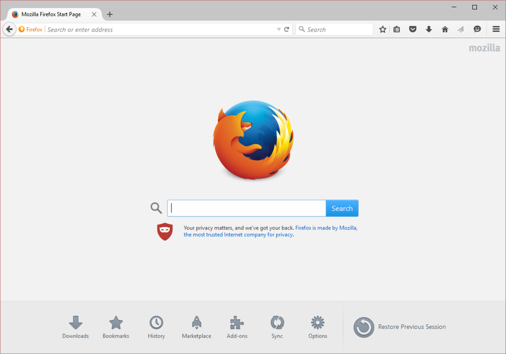

| Логотип | Название | Разработчик | Ссылка |
| Mozilla Firefox | Mozilla Foundation | https://mozilla.org/firefox |
 Mozilla Firefox — свободный браузер на движке Gecko, разработкой и распространением которого занимается Mozilla Corporation. Третий по популярности браузер в мире и первый среди свободного ПО — в июле 2014 года его рыночная доля составила 17,52 %.